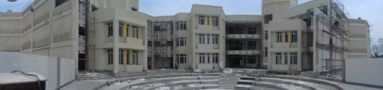
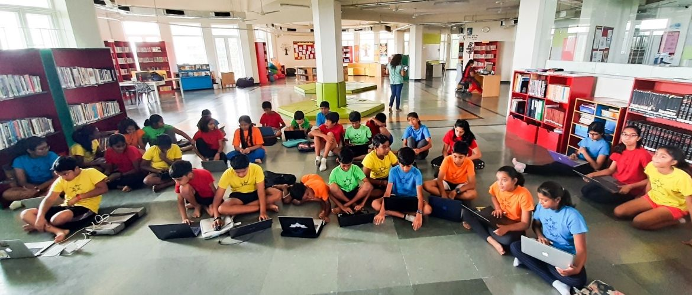

KC High has a vision to create competent, courageous, caring citizens of the world, empowered to build a better tomorrow. 21 years ago I started KC High as an after school program with a singular vision of creating an environment to prepare today’s kids to become better global citizens of tomorrow - an environment that sought to foster peer learning, celebrate diversity, and a joy for learning.